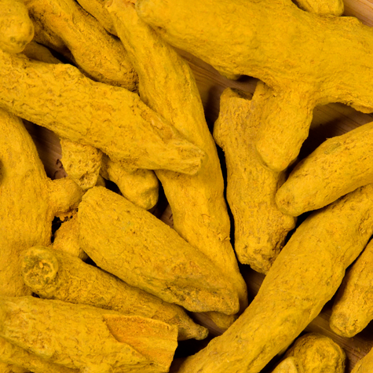
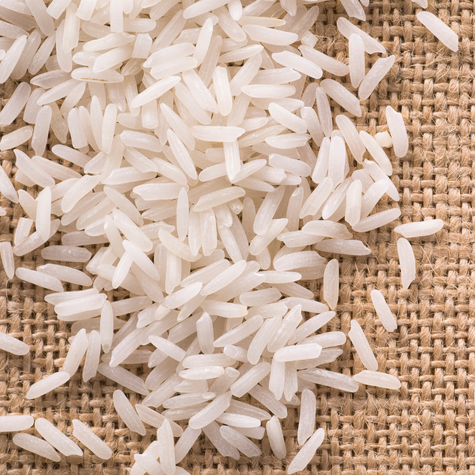
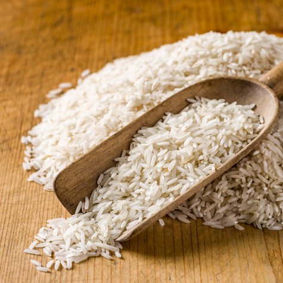
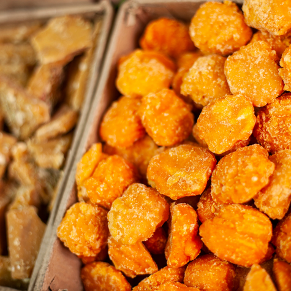
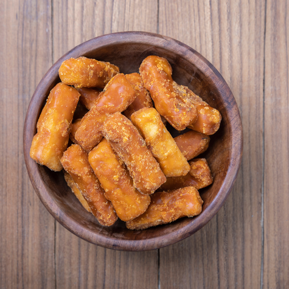
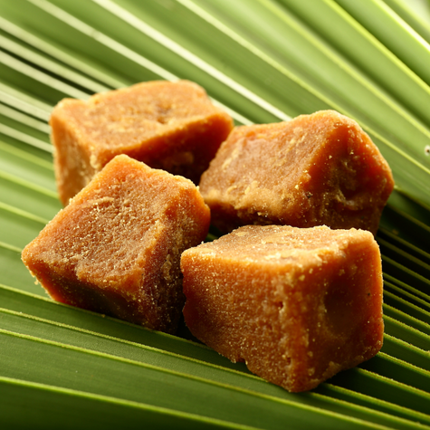

Turmeric
Turmeric is a bright yellow spice made from the root of the Curcuma longa plant and is widely used in cooking, especially in Indian and Southeast Asian cuisines. Known for its warm, earthy flavor and vibrant color, turmeric is a key ingredient in curries, rice dishes, and spice blends. Beyond its culinary uses, turmeric is valued for its antioxidant and anti-inflammatory compound curcumin.


Rice
Rice is a staple food for more than half of the world's population, especially in Asia. It comes in many varieties, including white, brown, basmati, jasmine, and wild rice, each with distinct flavor, texture, and nutritional value. Its versatility, affordability, and long shelf life make it a key ingredient in many cultures' cuisines.



Jaggery
Jaggery is a traditional, unrefined sweetener made from sugarcane juice or palm sap. It has a rich, caramel-like flavor and a deep golden to dark brown color, depending on the source and processing method. Unlike refined sugar, jaggery retains natural molasses, which gives it its distinct taste.



Surgical Knife
A surgical knife, commonly known as a scalpel, is a small, sharp-bladed instrument used by surgeons and medical professionals to make precise incisions during procedures. It typically consists of a handle and a detachable blade made of stainless steel or high-grade carbon steel.
Generic Drugs
Generic drugs are medications that have the same active ingredients, strength, dosage form, and route of administration as brand-name drugs, but are sold under their chemical name rather than a brand name. They improve access to treatment by offering effective and affordable options.
DTH hammers and bits
Down-the-Hole hammers and bits are essential tools used in drilling operations for mining, construction, and water well drilling. The hammer uses compressed air to drive a piston that delivers rapid percussive blows directly to the drill bit, helping maintain efficient penetration in hard rock formations.